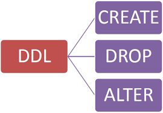
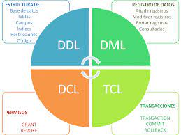

¿Qué son los gestores de transacciones?
conforman lo que se denomina el sistema de base de datos (a veces, se utiliza simplemente el término base de datos para denominarlo). En términos generales, un SGBD es un software que sigue un modelo de sistema de base de datos y, por lo tanto, resulta decisivo a la hora de configurarla, administrarla y utilizarla. Solo cuando el sistema gestor de base de datos está instalado y configurado, los usuarios pueden introducir y consultar los datos. Los permisos de lectura y escritura, así como las funciones de administración generales, se establecen mediante las interfaces específicas de la aplicación y el lenguaje de definición de datos correspondiente
COMPONENTES DE UN SISTEMA GESTOR DE TRANSACCIONES
-

DICCIONARIO DE DATOS:
consiste en una lista de metadatos que reflejan las características de los diversos tipos de datos incluidos en la base de datos. Además, estos metadatos informan sobre los permisos de uso de cada registro y su representación física. De esta manera, el diccionario proporciona toda la información relevante sobre los datos almacenados.
-
.png)
LENGUAJE DE DEFINICION DE DATOS:
el lenguaje de definición de datos, también llamado lenguaje de base de datos o DDL (data definition language), sirve para estructurar el contenido de la base de datos. Gracias a este lenguaje, es posible crear, modificar y eliminar objetos individuales, como referencias, relaciones o derechos de usuario.
-

LENGUAJE DE MANIPULACION DE DATOS
mediante el lenguaje de manipulación de datos o DML (data manipulation language), se pueden introducir nuevos registros en la base de datos, así como eliminar, modificar y consultar los que ya contiene. Este lenguaje también permite comprimir y extraer los datos.